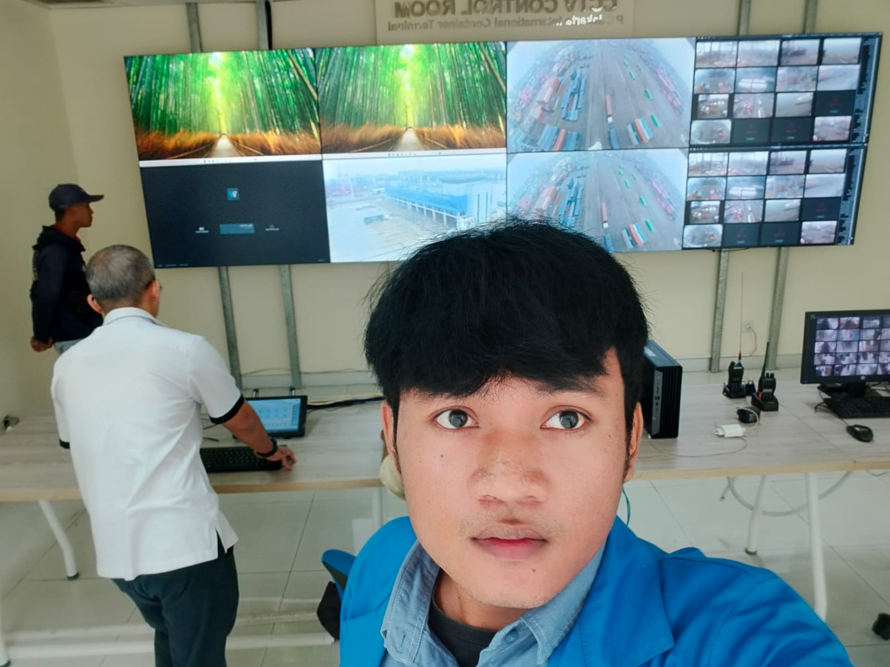

Featured Project
Digital Log System
Transformasi pelaporan kerusakan manual menjadi sistem berbasis web yang meningkatkan kecepatan respon perbaikan vendor
di PT. Jakarta International Container Terminal.

Interface
Final Project Presentation

Monitoring